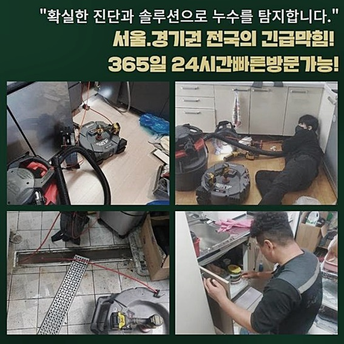
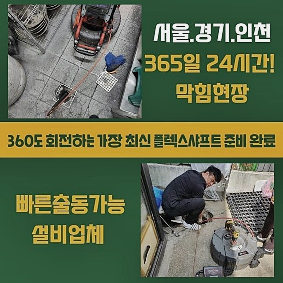
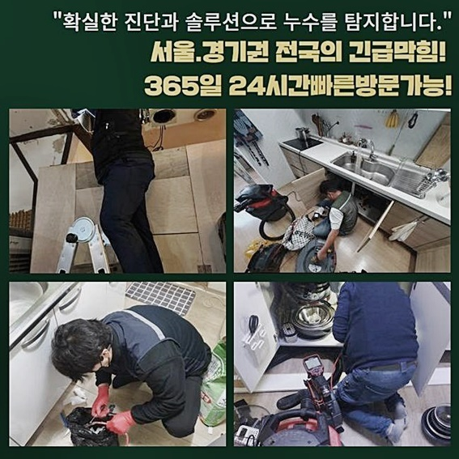
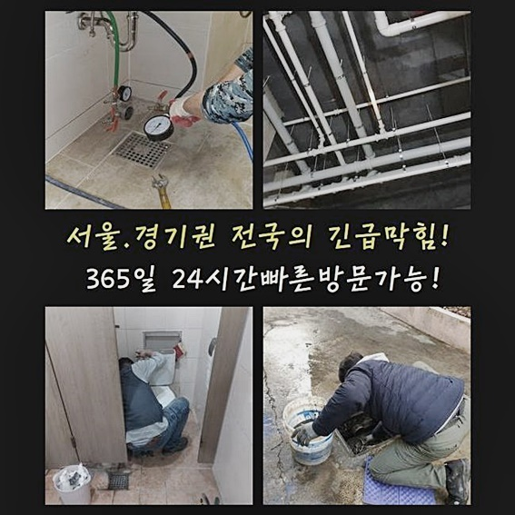
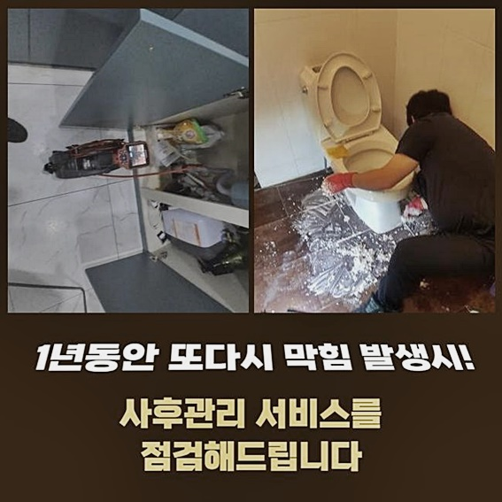
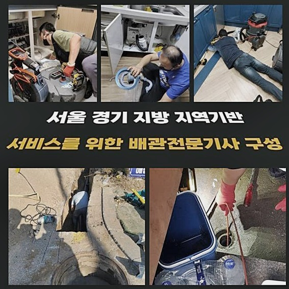

🏠 안산 와동욕실뚫음 신길동 배수로뚫기 배관막힘
용인시 처인구 배관막힘 전문 시공 후기

📋 작업 개요
- 위치: 용인시 처인구, 수원시 영통구, 화성시 동탄
- 서비스 유형: 배관막힘, 고압세척, 내시경점검
- 작업 일시:
- 업체명: 하수구수사대 (010-5615-2118)
🔍 문제 상황
안산 와동욕실뚫음 신길동 배수로뚫기 배관막힘
하수도가 막혀버리면 일상을영위할때 불편하게될텐데요
하수구를 뚫어보려고 갖가지의 방법대로 해결하려고 하십니다
그치만 확고한해결로는 연결되지않고 경우에따라 막힘현상을 심각하게 만드실수도있어요
평소에 지내실때 하수구가 막히지않게끔 주기적인 점검을해주시는게 중요해요
작업사례를 통하여 설명할테니 읽어보신다면 도움되실거에요
의뢰자께서는 처음에 큰문제라고 생각하지못하고 방치하셨으며 상태가 점점심해져서 하수도가 막히게되었죠
이번현장은 오랫동안 지어져있는 빌라였고 생각보다는 깔끔하게 관리되고 있었어요
그치만 하수구내부는 어떤식으로 관리하셨는지 파악이불가했기에 경우의수를 살피면서 하수구구조를 파악하고있었어요
저희들은일단 의뢰자께서 말씀해주신 내용을 참고해서 오염물을 흡입시켜주는 석션장비를챙겼고 내시경카메라와 샤프트기까지 준비했어요
연식자체가 오래안된 아파트라면 분쇄기계를 사용하지않고 석션장비만으로 오염물을 없앨수있는 상황을 보실수가있죠

🔎 원인 분석
💡 전문가 진단: 정밀 진단 장비를 사용하여 슬러지의 고착 여부를 판명하고 타격/세척 작업을 실시했습니다.
이곳과같이 노후화된 아파트에서 막힘현상이 일어난경우 분해장비를 활용해야해요
샤프트과정을 거친다면 시간이들고 전문장비들을 쓰다보니 수리비에있어 예상보다더 나올수가있는데요
이런것에대하여 작업전에 고지드리고 고객분께서 승인을하셔야지만 진행하니 염려마세요
무리하게 배관을건들면 되려배관이 역류하거나 파손이일어나 물이새는 경우로까지 연결되기도해요
한눈에봐도 막혀있었으며 역류때문에 배수관이 넘쳐있는걸 마주할수있었죠
하수에서넘친 오물로인하여 심한악취현상이 발생했기에 빠른대처가 필수적이었죠
문의주신분께선 처음에 꽉 막힌 것은 아니었기 때문에 방치하셨으며 상황이 점점 악화되어 싱크대가 막히게 되었습니다
싱크대배수구에 물을내리니 물이빠지지 못하는 상태였고 싱크대하부장쪽에 배관연결부에서 역류되고있는걸 살펴볼수가있었네요
석션기를사용해 오물흡입을 위해서 시도해봤으나 잔해물로인해 흡입이 불가했어요
오래쌓인 이물질이 배관내부쪽에 붙어있는 상황이어서 미동없는 상황이었죠
해결을위하여 석션기로 휘저어봤지만 소량의오수만 조금흡입하여 제거할수있었죠

🔧 작업 과정
답답한마음에 날카로운 물건들로 배관에투입해 처리해보려고 시도하는분도 있으실거라 생각합니다
재차 말씀드리는것으로 노후된 하수배관에 압이가해지면 손상문제가 일어날수있어 전문업체의 도움을통해 처리하는것이 올바른 해결책이랍니다
싱크대세척을 착수하기위해서는 원인이뭔지 확실히 파악해보는것이 필요하다고 할수있어요
배관cctv를 배관속에 투입시켜 어떤상태인지 살펴보았어요
물이차있었으며 찌꺼기들과 슬러지들이 가득찬것을 내시경모니터로 의뢰인과같이 확인하였어요
가득차있었기에 살짝만 물을흘려보내도 물이넘친거죠
내시경 카메라로 이미 노후화가 진행된 배관의 상태를 확인할 수 있었으며 수직관쪽이 시작되기 전까지 관 자체가 내려앉은 것도 볼 수 있었습니다
양념과기름이 상당한 한국음식의 특징상 슬러지들도 쉬운방법으로 생기게되는데요
오염물질들이 쌓여지는걸 예방하려면 오일이묻은 그릇은 키친타올로 닦아낸뒤 물로씻어내고 온수의물로 부어보는것도 좋은방법중에 하나입니다
단단한이물이 붙은상태이므로 이럴때 샤프트작업이 진행되면 손상문제로 연결될수있다보니 약품사용후 샤프트과정을 거치기로 계획을 수립했어요
연성화시켜주는 용액제품을 배관에투입후 5분정도 지나고 배관카메라로 내부쪽을 한번더 확인해준뒤 분쇄기기를 사용해주었죠
사슬모양의 헤드가 회전하며 고착물을 분해시키고 걸어서빼주는 과정까지 진행하는 기계입니다
속해서 내시경카메라로 관내를 파악했으며 분쇄기로 고착물질을 잘게부수어 막혀있는배관을 뚫어나갔어요
분해된 잔여물들을 흡입기로 빨아들였고 고압수를 쏘는 세척장비로 말끔히 청소하는작업도 병행하였어요
고압세척장비를 일부지점만 연속해서 분사한다면 배관에 균열이 갈수있어 한쪽에서만 분사되지않도록 신경써서 진행해주었어요
소량이라고 하더라도 잔여물질들이 남아있다면 재차막힐수가 있기때문에 확실한 마무리를위하여 심혈을기울여 작업했습니다
파이프관이 오래되었다보니 뚫는기계들을 조심스레 활용하는게 뚫어내는데 중요한 키포인트였어요
오염물의 형태를 살펴봤더니 끈적하게 기름져있는 상태였으며 많은종류의 오염물질들이 뭉쳐져있었어요


✅ 작업 완료
마무리전 촬영카메라를 활용해서 배관안쪽을 살펴보았고 오염물질없이 깨끗한 하수구를 들여다볼수있었죠
관이낡은건 물론이었으며 물이빠지는쪽의 배관구조가 조금더높게 자리잡은 역구배형태여서 작업난이도가 높았습니다
역구배로이뤄진 배관구조라면 이물이 쉽게쌓이는 구조이므로 정기적인 세척작업이 없다면 같은현상으로 막히는일을 경험하실수도 있답니다
이런것들을 고객분께 세세히 설명드렸으며 예방하는과정들을 일러드렸어요
갑작스럽게 배관이막혀 불편함이 느껴진다면 저희들을통해 해결해보실것을 권고드릴게요



⚠️ 하수구 배관 막힘 예방 및 관리 가이드
- ✅ 머리카락, 비닐, 물티슈 등 물에 분해되지 않는 이물질은 절대 흘려보내지 마세요.
- ✅ 기름기 많은 식기는 설거지 전 키친타올로 먼저 기름때를 닦아내세요.
- ✅ 주기적으로 배수구에 뜨거운 물을 가득 부어주어 유지방 고착을 방지하세요.
- ✅ 작업 후 1년 이내 재발 시 무상 A/S 보증 서비스를 제공합니다.
💡 핵심 정리
- 확실한 장비 작업(내시경 점검 및 샤프트 스케일링)으로 원인을 뿌리 뽑습니다.
- 작업 후 1년 이내에 동일한 부위 재발 시 100% 무상 A/S 서비스를 보장합니다.
- 서울 · 경기 · 인천 전 지역에 24시간 언제든 긴급 출동할 수 있도록 항시 대기 중입니다.
❓ 자주 묻는 질문 (FAQ)
🚨 용인시 처인구 배관막힘 문제로 고민이신가요?
정확한 원인 진단과 확실한 시공으로 재발 없는 해결을 약속드립니다.
24시간 긴급 출동 | 서울 · 경기 · 인천 전지역 | 1년 내 재발 시 무상 A/S